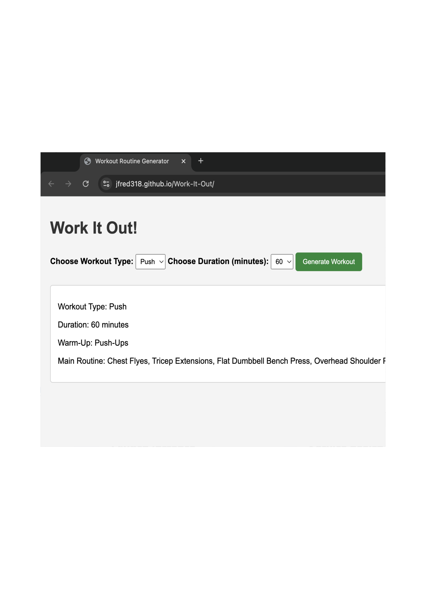
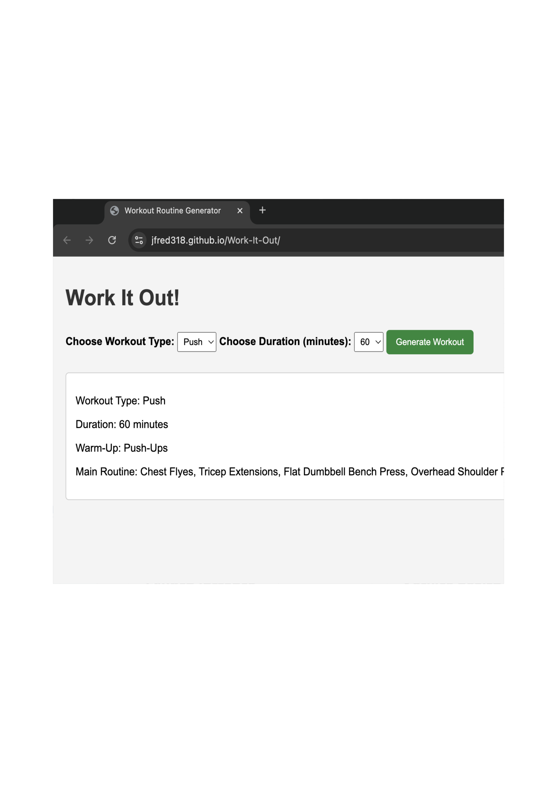

The Ideas
Swung has been my favorite project to work on over the past couple months. It started with a problem that came to me while playing golf; I don't know what club to hit. Swung calculates how far each club in your bag goes based on only a single shot, taking into account the lie of the ball. I have enjoyed diving into IOS development as I get to explore UX and UI design with this prototype.
Work It Out is a website I made that generates for users a planned out workout routine. Currently users can decide between different muscle groups and select how much time they have to work out.
To view, click here.
What I'm working on
Currently, I'm working on adding a weather syncing button that will gather the user's current location and the weather around them. This allows for more accurate shot predictions as weather plays a major part in a golf ball's trajectory. It is my dream to release this app to the public once I deem it ready.
I want Work It Out to be the ultimate tool to use in and outside of the gym. The next major feature I'm looking to add revolves around the idea of clean eating and making healthy decisions. Similar to the routine generator, I want to create a helpful dieting tool that outputs for users a recommended meal plan.
 
